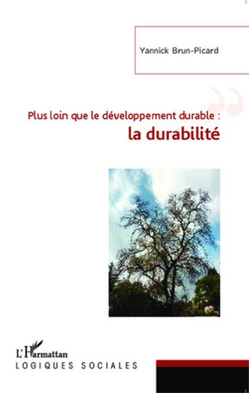

Les territoires de nos sociétés montrent lors de phénomènes climatiques paroxysmiques ou récurrents à l’image des épisodes méditerranéens une vulnérabilité accrue. Les chutes de neige en France en novembre 2019 ou l’épisode de marée haute à Venise le même mois sont des exemples éclairants. L’Homme s’efforce de dompter, de contenir, de canaliser, de façonner l’épiderme terrestre pour le mettre « à sa main ». Trouver des solutions afin de limiter les conséquences des forces naturelles est indispensable, mais insuffisant. Les sociétés et leurs modes de fonctionnement laissent une empreinte catastrophique sur la Terre, seul lieu de vie où nous avons la responsabilité d’œuvrer pour les générations futures. Les pollutions, les prédations, les démonstrations de la toute-puissance de l’ingénierie humaine, les gaspillages alertent chaque jour quant aux conséquences parfois irréversibles de nos comportements pour lesquels l’immédiateté est la norme et où la durabilité est ignorée. Il est vrai que pour répondre à ces maux une piste a été conçue : le développement durable. Cet objectif louable est inculqué dans les établissements scolaires et il est indispensable à la préservation de l’écoumène dans sa diversité. Toutefois, les dynamiques sociétales exposent l’incomplétude de cette option. Celles-ci invitent toute personne soucieuse du monde en devenir à tendre en direction de la durabilité.
Université du Québec à Chicoutimi 2018, congrès de l’ACFAS
Œuvrer à une durabilité consciente, volontaire, engagée et efficiente s’avère extrêmement compliqué. Pourtant, des acteurs sociétaux s’efforcent d’agir dans cette direction. Les nettoyages de rivière ou des rues par des élèves et des associations, la permaculture, la gestion des déchets, le développement des circuits courts ou encore la volonté des institutionnels de voir les cantines proposer une alimentation plus saine attestent de l’existence d’un engagement sociétal invitant les actants à dépasser le développement durable et à agir pour la durabilité.
Nettoyage de rivière à Saint Antonin Noble Val
Suggérer une démarche collective de ce type n’est pas de l’angélisme. C’est inviter tous les actants sociétaux que nous sommes au cœur des actions éducatives à accepter le principe de moindre contrainte et à progresser dans une gestion consciente de l’avenir. Ceci est réalisable selon une conception projective en intégrant la nature de notre rapport au monde, la géographicité. Cette action est accompagnée d’une structure méthodologique au sein de laquelle la durabilité est l’objectif tout en étant le moteur. Les impacts de nos actes anthropiques doivent être reconnus pour que l’objet puisse induire une méthode et qu’au final le paradigme de durabilité devienne un support des dynamiques sociétales propices à une évolution soucieuse de toutes les formes du vivant ainsi que de l’épiderme terrestre.
La nature de notre rapport au monde
Les positionnements proposés proviennent d’études publiées, et débattues lors de nombreux colloques, tout en étant des extensions de ces phases de préparation à l’affirmation de la nécessité d’agir de manière différente dans les contextes éducatifs en dessinant une méthode reproductible, vectrice de scientificité, soucieuse des identités et des attentes des intervenants. La géographicité initie cette conception où la responsabilité de chacun tient une place réelle dans les actes journaliers. Avant de porter un bref regard sur la géographicité, celle-ci doit-être contextualisée au cœur d’une mouvance méthodologique et conceptuelle : le néo-socioconstructivisme.
NÉO-SOCIOCONSTRUCTIVISME
Représente une méthodologie des sciences humaines dans leur globalité ancrée sur les propositions du socioconstructivisme de Vygotsky et tendue en direction de l’apprenance. Son cheminement général s’articule autour de l’action de percevoir, analyser, comprendre et expliquer. L’objet défini par l’actant induit la méthode qui sera employée pour parvenir à rendre le monde des faits accessible à tout observateur. La subjectivité objectivée soutient la lecture praxéologique des réalités disséquées. Le prisme d’étude met en exergue un référent, un contexte, un initiateur et un destinataire pour parvenir à une réalisation. De la base sémiotique à quatre éléments sur laquelle repose cette démarche émerge un vecteur sémiotique qui s’agrège, s’imbrique, se lie par plasticité, porosité ou capillarité avec les structures proximales. Ces dernières donnent à percevoir un nuage de connexions. Il représente le phénomène étudié dans ses diversités, sa complexité, ses interdépendances et ses dynamiques. L’objet faisant la méthode, la contextualisation et la coopération entre les agissants tiennent une place d’articulation fonctionnelle pour démontrer, exposer et expliciter les dynamiques, la nature des acteurs, les spécificités des faits, ainsi que les particularités des agrégations au sein d’interfaces qui sont des facettes de la réalité rendue explicite. Dans cette perspective de mise en œuvre, l’intervenant prend appui au cœur des ancrages fondamentaux de son domaine d’expertise. Il densifie ses productions par l’emploi pragmatique de la transdisciplinarité devenant ainsi un actant projectif.
Le néo-socioconstructivisme permet de s’immerger au cœur des phénomènes sociétaux, physiques ou naturels tout en conservant la distance nécessaire à leur lecture ainsi qu’à leur compréhension. Il est vrai que la géographicité (Brun-Picard, 2014) mériterait dans ces pages de plus amples développements. Sa définition suffit à la positionner afin que chacun perçoive ce qu’il est possible d’entreprendre.
GÉOGRAPHICITÉ
La géographicité est une entité conceptuelle néo-socioconstructive vectrice d’une interface personnalisée de la nature de notre rapport au monde. Elle donne une structure stratifiée, constructive, projective et évolutive de nos spatialisations virtuelles, psychologiques et physiques. Elle prend forme sous l’impulsion d’une action praxéologique, produite en fonction de nos expériences mémorisées, de nos orientations, de nos aspirations et de nos besoins. Elle est souvent inconsciente. Sa finalité est de s’approprier le monde matériel et immatériel au sein duquel nous vivons. Elle est spécifique à chaque individu tout en étant communicable et exprimable.
Elle est accessible à tout un chacun par l’intermédiaire de la nature identitaire exposée par les actants, une médiance trajective de nature communicationnelle, une contextualisation sociétale et un support territorialisé sur/dans lequel l’individu s’exprime, au sein duquel il vit, et, où il se réalise. Lorsqu’elle est retranscrite avec sincérité et intégrité, avec toute la subjectivité de l’Être, couplée à son objectivité pragmatique, elle dévoile l’intégration de l’individu dans les mosaïques d’interfaces qu’il conçoit et qu’il partage au contact de l’épiderme, des éléments du vivant, des dynamiques structurantes et des personnes en présence. Elle rend perceptible le rapport au monde accepté, reconnu, projeté et affirmé par chaque individu qui souhaite partager et rendre accessibles ses appropriations du monde au sein duquel il s’immerge.
La géographicité est indispensable à toute perception des réalités produites sur l’épiderme terrestre et pouvant être analysées par des observateurs. Il n’est pas concevable d’aborder des dynamiques anthropiques qui façonnent les territoires sans intégrer la géographicité. Ce concept permet à chaque actant d’accepter sa subjectivité objectivée et simultanément de se préserver de tout intellectualisme quant à l’étude des phénomènes qui seront ses objets d’étude. La géographicité nous ramène aux textes de Ritter (1974), de Dardel (1990), voire de Vallaux (1908). Elle fait de tout individu un constituant interdépendant du vivant et de l’épiderme terrestre sur lequel nous intervenons. En plaçant ainsi ces deux concepts lesquels dessinent des contours socioconstructifs à nos actions d’Être conscient, tout en liant d’une manière indissoluble chacun de nous au support terrestre, il semble plus simple d’appliquer des méthodes trop souvent ignorées.
L’analyse systémique de durabilité et les méthodes collaboratives
La méthode d’intervention est un impératif ou tout au moins elle s’inscrit dans une fonction de cadre fonctionnel et pragmatique vérifiable et transposable au service du plus grand nombre. Là, interviennent, sont mises en œuvre, sont recherchées et sont prônées l’analyse systémique de durabilité (ASD) associée aux méthodes collaboratives et coopératives, ces dernières étant induites par les pratiques transdisciplinaires attendues dans le néo-socioconstructivisme et l’affirmation de la géographicité. Il y a une réentrée fonctionnelle de la trame méthodologique sur elle-même. Cet aspect épistémologique sera probablement développé ultérieurement dans un cadre spécifique. L’ASD et la collaboration coopérative sont l’expression de cette maxime : « La pierre taillée, doit être façonnée, celui qui l’oublie, ne pourra la positionner. » En effet, ces démarches et ces trames méthodologiques exigent des actants qu’ils reviennent sur l’œuvre accomplie afin que celle-ci soit compréhensible par les destinataires.
L’agrégation de l’ASD et de la collaboration coopérative facilite la lecture des problèmes selon leurs niveaux, les implications entre les acteurs, les impacts immédiats ou différés ainsi que les ramifications des différentes dynamiques en présence (Brun-Picard, 2014a). La diversité contextuelle alimente les données au sujet de la richesse, de la pauvreté, de l’alimentation tout en incluant des éléments matériels et sociétaux tels que la santé, la sécurité, l’éducation. Se greffent sur ces aspects les géosystèmes, les écosystèmes ainsi que la culture et le patrimoine.
Pour embrasser une telle diversité la structure est analytique afin que les influences, les options, les expressions et les tolérances puissent être relevées.
De celles-ci sont mis en exergue les champs de forces façonnés et induits par les participants en fonction des temporalités, des informations, des destinations et des finalités. Les évolutions des pouvoirs, des légitimités, des enjeux et des influences viennent agrémenter ces traits. S’ajoutent à ceux-ci les représentations selon l’ordre et le chaos, les lacunes et les conflits, les causalités ou les dépendances. Les jeux d’interfaces sont inclus dans cette trame méthodologique. Ils permettent de reconnaitre les territoires inclus, les connectivités, les potentialités et les impacts. Les propositions de Chevalier (2009) et celles de Villeneuve (1998) se lisent en pointillé tout en étant les fondements à une mise en application contextuelle. L’utilisation de ces outils adaptés à l’objet durabilité facilite la mise en relief des comportements anthropiques.
L’avidité de l’anthropisation source de destructions
Mettre en perspective les impacts et les destructions commis par la main de l’Homme donne une image terne des consciences à la plasticité modelée selon les intérêts du moment. Sans entrer dans les détails de ces actes de prédations ni étaler une typologie indigeste, des facettes de cette noirceur de l’anthropisation imagent ce fléau dont la prise de conscience invite à tendre en direction de la durabilité. Les prélèvements irréversibles, l’exploitation de l’épiderme et les traits majeurs de l’anthropisation sont les trois aspects retenus bien qu’étant des plus restrictifs au regard des faits contemporains.
Les prélèvements irréversibles que sont les extractions minières (charbon, sel, métaux rares) ou pétrolières, les méfaits sur la faune, la surpêche source de l’éradication des ressources halieutiques par exemple, et ceux perpétrés sur la flore avec des déforestations où les sols sont mis à blanc, ainsi que la gestion désastreuse de l’eau en tant que ressource hydrique universelle montrent chaque jour l’étendue des dégâts. L’exploitation de l’épiderme avec les emprises de l’agriculture intensive auxquelles se greffent les pollutions chimiques, les implantations qui font la négation de la diversité des territoires et les aménagements routiers ou ferroviaires représentent des cicatrices indélébiles sur l’épiderme terrestre. L’urbain dans ses facettes les plus sombres et tentaculaires contribue aux prédations touristiques ainsi qu’au mitage des territoires où se créent des ruptures et où s’intensifient les phénomènes climatiques paroxysmiques. Les inondations, les vagues de chaleur, les glissements de terrains, les enfoncements du sol dans certaines villes du Japon attestent des destructions causées par un manque d’anticipation, un manque de connaissance et surtout par une volonté d’exploiter au plus vite les parcelles disponibles. Afin de parvenir à accéder à une distanciation empathique suffisante pour éviter d’être submergé par l’émotion qui suit une catastrophe, il est nécessaire d’accepter que l’objet puisse induire la méthode.
Quand l’objet induit la méthode
Ces réalités conduisent tout actant à admettre que l’objet puisse induire la méthode d’engagement, voire qu’il doive induire l’œuvre méthodique à entreprendre. C’est pour cela que les directives incitatives à cette induction sont présentées en corrélation avec l’aspiration à une mise en œuvre optimisée de la durabilité.
POUR QUE L’OBJET INDUISE LA MÉTHODE
1. Reconnaitre l’existence d’un phénomène spécifique.
2. Inventorier la littérature afin de trouver une méthode pour permettre de le comprendre et de l’expliciter.
3. Une fois délimité et défini prendre en compte le contexte, les acteurs, les obligations, les contraintes, les moyens d’analyse, les structures démonstratives et mettre en place une trame pertinente.
4. Mettre en forme la méthode, la démarche, le contrôle, les tests, les vérifications, les comparaisons, les validations pour la construction élaborée.
5. Exposer les constats, les problèmes, les causes, les influences, les externalisations et les potentialités.
6. Proposer des pistes d’évolution, d’orientation, de projection, d’anticipation, voire de théorisation.
7. Admettre la nature socioconstructive et praxéologique des éléments démonstratifs retenus et mis en synergie.
8. Éviter de se soumettre, de satisfaire, d’abonder et de lustrer l’ego de quelque courant de pensée.
9. Montrer le côté obscur, mettre en relief les maux, démontrer son impartialité et attester de son intégrité.
10. Diffuser une production vectrice d’une pensée critique pour répondre à des réalités que les normes refusent de prendre en considération tout en faisant progresser et en améliorant nos savoirs et nos pratiques.
Ces dix points ne sont pas limitatifs (Brun-Picard, 2019, 151). Ils orientent de manière incitative une démarche méthodologique dont l’objectif dans le cas présent est d’œuvrer à une conscientisation de la durabilité afin qu’elle puisse être mise en œuvre de manière efficiente dans tous les domaines d’exercice. Le cadre limité d’un article contraint la densité démonstrative, l’intérêt se trouve dans l’exposé et les potentialités des possibles envisageables par la seule mise en application de ces directives associées à l’ASD et aux méthodes de collaboration coopérative. En jalonnant la conceptualisation d’un objet par la construction d’une méthode adaptée à ses spécificités l’influence de Novak (2010) se perçoit et s’affirme tout en liant cette complexité à celle proposée par Morin (1999).
Cela signifie que la scientificité attendue pour toute activité de production et de diffusion de savoirs, en particulier au sein des sciences humaines, doit pouvoir catalyser des influences diverses en présence en toute impartialité. Les dynamiques conceptuelles initialisées trouvent dans ce contexte un support d’expansion et de démonstration de leur efficience tout en tendant en direction du paradigme de durabilité.
Université du Québec en Outaouais 2019, congrès de l’ACFAS
Tendre vers le paradigme de durabilité
Le paradigme de durabilité (Brun-Picard, 2019a, 44) invite tout actant sociétal à dépasser son individuation pour construire au contact des autres une trajection à même d’œuvrer concrètement pour une durabilité consciente des exigences pour après-demain. La différence la plus marquante entre le développement durable et la durabilité est cette inscription dans des temporalités très longues pour lesquelles la rentabilisation rapide et le culte de l’immédiateté n’ont aucune place. De telles orientations entraineront des assauts contre à cause des contraintes induites.
PARADIGME DE LA DURABILITÉ
Concevoir, de manière trajective pour agir au cœur d’un impératif responsable de durabilité, notre empreinte et notre avenir sur la Terre avec le minimum de conséquences pour les écosystèmes et les géosystèmes en intégrant l’interdépendance du vivant selon le principe de moindre contrainte dans une perspective transdisciplinaire en relation avec les évolutions climatiques, pour conserver la diversité des constituants de la Nature, tout en limitant les formes de prédations anthropiques portées par un consumérisme exacerbé d’une doctrine avide de l’accumulation sans nécessité d’un ego surdimensionné de la toute-puissance constructrice de l’infaillibilité de l’Humanité. Laquelle est devenue un parasite destructeur de son seul lieu de vie sur l’autel de sa prétendue intelligence qui gère ses méfaits alors qu’il lui incombe d’anticiper les conséquences de ses actes dans un impératif de durabilité au service du vivant.
Ce paradigme donne un cadre d’intervention où le monde actuel, les impératifs, les obligations, des jalons spécifiques et l’avenir collectif sont inclus au sein d’une synergie socioconstructive. Sans entrer dans les détails, le monde actuel brasse l’opportunisme, la médiatisation, la déresponsabilisation et l’immédiateté. Il entretient le culte de la personnalité.
Il exacerbe la compétition, la toute-puissance, la rentabilisation, l’argent roi et la spéculation. L’ignorance, l’infaillibilité, l’idéologie et la corruption morale renforcent le triste constat. Pour que la durabilité devienne un paradigme porteur des impératifs sont à prendre en considération. Ils sont de s’extraire de l’emprise financière, de mettre un terme aux croyances, d’endiguer le gaspillage et la prédation et d’économiser la Terre.
Des obligations accompagnent ces attentes. Elles prônent l’exemple, les sanctions, le contrôle et l’intégrité des actants. Elles reposent sur le discernement, l’équité, la lutte et l’engagement des personnes incluses dans une mouvance vectrice de durabilité. Pour y parvenir, des jalons spécifiques viennent marquer la progression des intervenants.
Ils valorisent la moindre contrainte, la considération de la diversité, la conscience de s place et la responsabilisation. Pour cela, ils sont soutenus par la permanence, le bon sens, l’intégration du vivant et la convivance. L’ossature du paradigme qui image l’action d’œuvrer à une durabilité conscientisée est en fixée, son avenir projectif se dessine. Il met en relief le besoin d’inculquer les contraintes, de s’inscrire dans le réel, de « mettre les mains dedans » tout en œuvrant dans une mise en œuvre transdisciplinaire. Ainsi, ce paradigme attiendra un niveau d’exemplarité démonstrative pour et par laquelle chacun de nous sera en mesure d'agir, non plus seulement pour le développement durable, mais pour que la durabilité soit un élément d’éveil et d’alerte de nos consciences.
Conclusion
La lecture de ces lignes laisse à penser que tout est méthode, enfin presque. Pourtant, Roland Barthes nous mettait en garde quant aux travers de l’abus de méthode : « La stérilité menace tout travail qui ne cesse pas de proclamer sa volonté de méthode. » Gardons à l’esprit pour conforter un positionnement aux marges des pratiques contemporaines que : « L’obscurantisme se répand lorsque les consciences ne tolèrent que ce qui les conforte. » En voulant œuvrer à une durabilité consciente, car partagée et enseignée, les quelques indications mises en relief invitent tout actant sociétal à faire preuve de méthode évolutive pour laquelle l’objet du devenir de l’interface Humanité/espaces terrestres induirait la méthode appliquée à un avenir plus vivable pour les prochaines générations.
La durabilité largement développée dans : Éduquer à la durabilité (Brun-Picard, 2019a) ; et très brièvement exposée, ci-dessus, dans une perspective de conscientisation annonce l’étendue du travail à entreprendre pour que nos sociétés s’engagent dans cette direction. L’intégration volontaire de la géographicité, portée par la mise en place l’ASD associée aux méthodes de collaboration coopérative, tout en prenant en compte les errances de l’avidité anthropique permettront d’induire des méthodes par l’intermédiaire de l’objet qu’est la durabilité pour valoriser le paradigme de durabilité.
Une pointe d’utopie et une autre d’Humanisme se détectent dans ces développements. C’est une évidence. Néanmoins, il est concevable de tendre en direction d’objectifs complexes tout en faisant preuve de méthode et de réalisme où que l’on se trouve et quelques soient nos héritages. Par ailleurs, ces invitations à œuvrer autrement attestent de l’importance de la transdisciplinarité ainsi que de la praxéologie, lesquelles sont indissociables de l’amélioration de nos actions sur l’épiderme terrestre. Il reste aux actants sociétaux et institutionnels plus qu’à se pencher sur de tels outils afin que l’Humanité limite ses destructions et en toute conscience préserve les potentialités du vivant et de la Terre.
Y.B-P.
BIBLIOGRAPHIE
Brun-Picard Yannick, 2019a, Eduquer à la durabilité, Enseigner, instruire au nouveau paradigme sociétal, L’Harmattan.
Brun-Picard Yannick, 2019, Quand l’objet induit la méthode, Conceptualisation des interfaces d’investigations conjoncturelles, L’Harmattan.
Brun-Picard Yannick, 2014a, Plus loin que le développement durable : la durabilité, L’Harmattan.
Brun-Picard Yannick, 2014, Géographicité, Interface de notre rapport au monde, L’Harmattan.
Chevalier Jacques, Buckles Daniel, 2009, Guide sur la recherche collaborative et l’engagement social, ESKA.
Dardel Éric, 1990, L’homme et la Terre, CTHS.
Morin Edgar, 1999, Relier les connaissances, Seuil.
Novak Joseph, 2010, Costruire mappe concettuali, Stategie metodi per utilizzarle nella didacttica, Erickson.
Ritter Carl, 1974, Introduction à la géographie comparée, Les Belles Lettres.
Vallaux Camille, 1908, Géographie sociale, La Mer, O. Doin.
Villeneuve Claude, 1998, Qui a peur de l’an 2000 ? Guide d’éducation relative à l’environnement pour le développement durable, Paris, UNESCO-MultiMondes.
Pour en connaître plus encore sur l’éducation à la durabilité,
« Méthode » invite ses lecteurs à lire l’ouvrage de Yannick BRUN-PICARD :
« Éduquer à la durabilité »
Enseigner, instruire, former au nouveau paradigme sociétal
Partager cette page